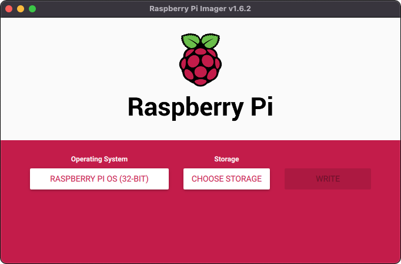
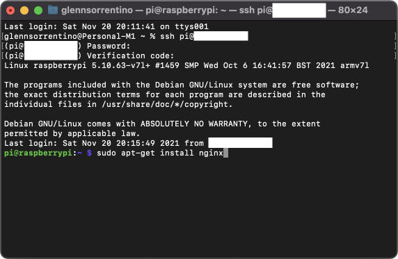
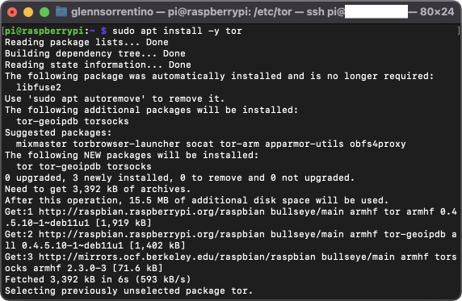
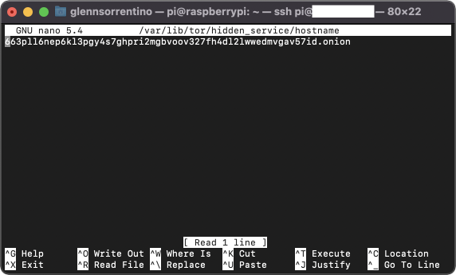
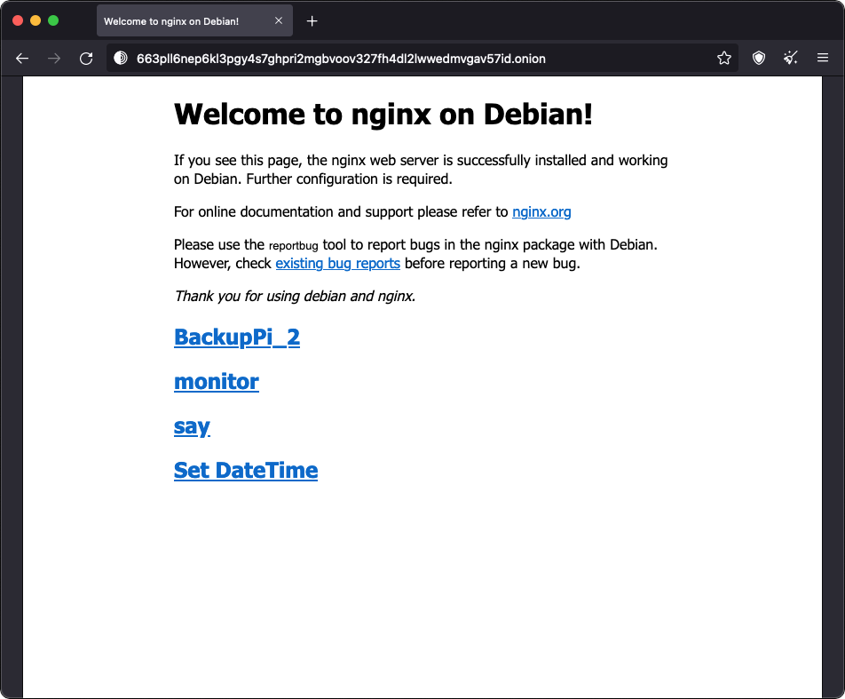

Creating an onion website is private, free, and can be deployed easier than a traditional domain. Follow the steps below and eliminate the need to purchase a domain and add-ons (like domain privacy), configure your web hosting, or provide personal and financial data to yet another vulnerable company.
Step 1: Setup Raspberry Pi
First, you should have an operational Raspberry Pi running a Debian-based OS. I used Raspbian via the Raspberry Pi Imager.
Step 2: Install NGINX
Install NGINX using this guide.
Step 3: Install Tor
sudo apt install -y tor
Step 4: Create an Onion Service
Go to your torrc file:
sudo nano /etc/tor/torrc
Create an onion service by uncommenting these lines:
HiddenServiceDir /var/lib/tor/hidden_service/
HiddenServicePort 80 127.0.0.1:80
Step 5: Restart Tor
sudo systemctl restart tor
Step 6: Find Your Onion Address
sudo nano /var/lib/tor/hidden_service/hostname
Step 7: Visit your website!
Enter your onion address in Tor Browser.
Next Steps
🎉 Congratulations, you created an onion website! If you want to go further, check out the additional resources below:
✅ Install Raspian
✅ Install NGINX
✅ Install & Configure Tor
⬜️ Enable two-factor authentication for SSH logins to your Pi
⬜️ Read: Best practices for hosting onion services from RiseUp
⬜️ Read: Setting up an onion service by The Tor Project
⬜️ Read: Take These Steps to Secure Your Raspberry Pi Against Attackers by Make Magazine